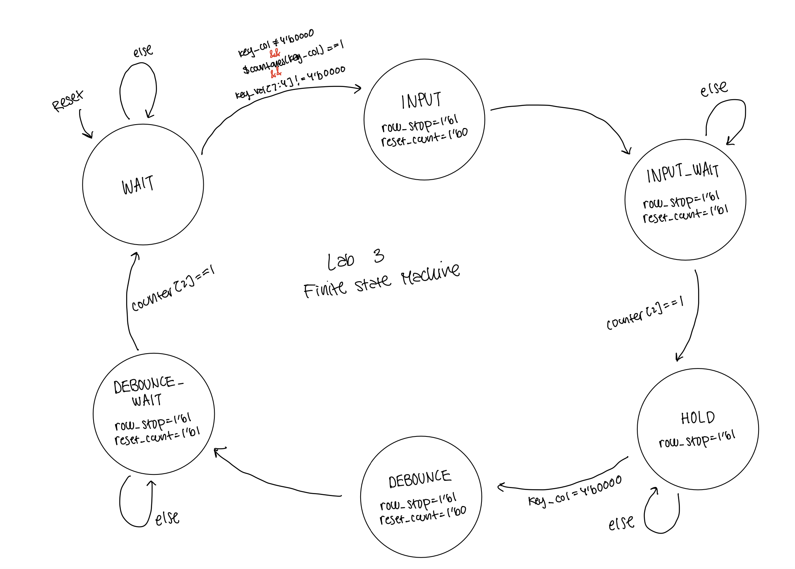
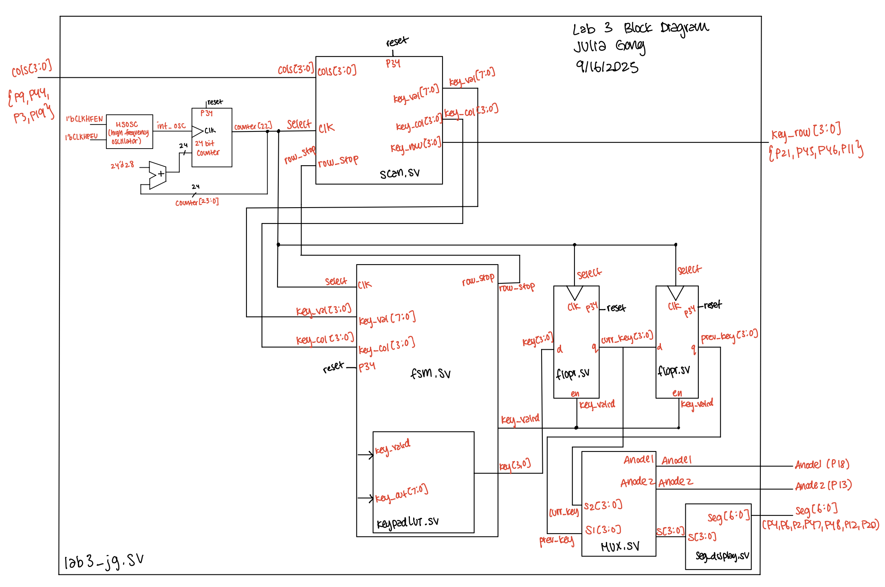
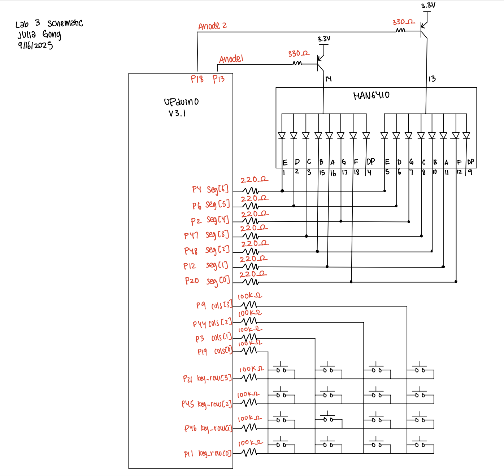
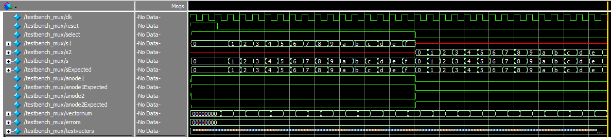
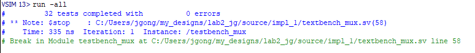
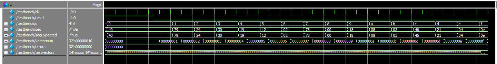
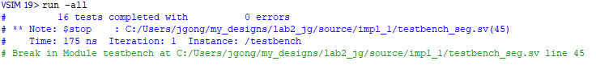
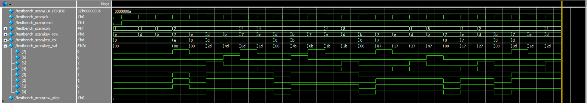
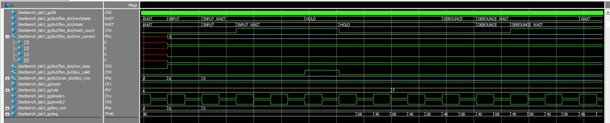

Lab 3: Keypad Scanner
Introduction
The purpose of this lab was to debounce the signals from a key press on a 4x4 keyboard. The last two imputs pressed would be dispayed on a dual 7-segment display. Additionally, the display would not lock up if multiple inputs are pressed and should ignore other inputs when one key is held down.
FPGA Design and Testing Methodology.
In this lab I designed an FSM in order to debounce the keyboard properly. The focus of this lab was to design synchronous sequential logic, which made me aware of synchronizing my column inputs as well as keeping track of what clock cycles specific values update at.
I used the dual 7-segment display from Lab 2, so I kept the same clock divider, hardware layout, and submodules.
Hardware Implementation

The components of this lab consisted of the development board, a 4x4 keypad, a dual 7-segment display, two 2N3906 PNP transistors. The keyboard schematic can be found here.
{kind=link}
When implementing the design onto the breadboard, 220Ω resistors were used to draw current from each segment of the dual 7-segment display. Since there was a PNP transistor connected to the anodes, there is a Vceast of 200mV. Additionally, there is a voltage drop from the LED segment of 1.8V. Using V = IR, (3.3V - 0.2V - 1.8V)/10mA = R, where R = 130Ω.
The resistors used to connect the base of the PNP transistor to the FPGA pins were 330Ω resistors. This value was calculated using V = IR, where V = 3.3V - 0.65V and Ic = 8mA. 0.65V is the base emitter saturation voltage found on the datasheet and 8mA is the current limit.
Additionally, current limiting resistors were used to connect the keypad pins to the FPGA pins. Using V = IR, where V = 3.3 and I = 8mA, R = 410 Ω. I found 510Ω resistors and used them to limit current.
Technical Documentation
The code for this lab can be found in this Github repository. This contains the code for the top module, the submodules used, as well as the testbenches made.
FSM State Transition Table
In order to determine the debounce of the keys, I implemented a finite state machine. There are a total of 6 states. I do think that my finite state machine was effective in debouncing the key inputs. However, it can definitely be made more efficients so that there are ony 4 states (eliminating the INPUT_WAIT and DEBOUNCE_WAIT stages).
I chose to debounce the keypad using an FSM with counters. This approach ensures that both the press and release of a key are validated over a minimum time, avoiding multiple false triggers due to switch bounce. Compared to hardware RC circuits, the FSM approach is more flexible since debounce times can be tuned in code. Compared to shift-register or oversampling methods, my design uses fewer flip-flops and integrates naturally with the keypad state machine. The tradeoff is that very brief taps shorter than the debounce window may be missed, but for human inputs this timing works.

The state transition table can be seen below:
| Current State | Input Condition | Next State | Outputs (row_stop, key_valid, reset_count) |
|---|---|---|---|
| WAIT | key_col != 0 && $countones(key_col) == 1 && key_val[7:4] != 0 |
INPUT | 1, 0, 0 |
| WAIT | otherwise | WAIT | 0, 0, 0 |
| INPUT | (always) | INPUT_WAIT | 1, 0, 0 |
| INPUT_WAIT | counter[2] == 1 |
HOLD | 1, 1, 1 |
| INPUT_WAIT | otherwise | INPUT_WAIT | 1, 0, 1 |
| HOLD | key_col == 0 |
DEBOUNCE | 1, 0, 0 |
| HOLD | otherwise | HOLD | 1, 0, 0 |
| DEBOUNCE | (always) | DEBOUNCE_WAIT | 1, 0, 0 |
| DEBOUNCE_WAIT | counter[2] == 1 |
WAIT | 1, 0, 1 |
| DEBOUNCE_WAIT | otherwise | DEBOUNCE_WAIT | 1, 0, 1 |
Block Diagram
The block diagram below shows all the submodules and how they interact with one another.

Schematic
The schematic below depicts the pin assignments for the hardware components.

Results and Discussion
The dual 7-segment display responds properly to the keypad inputs. When multiple keys are pressed at once it registers the key pressed first and does not lock up. Additionally, when one key is held down and other keys are held down, the other inputs are ignored. The functioning system can be seen below!
Testbench Simulation
The waveforms from the mux module simulation show that the mux is choosing the proper values for s[3:0], anode1, and anode2.


The waveforms for the 7-segment display verify that the proper pattern of segments are lit up in response to the 4-bit input. 

The waveforms for the scanner shows that the rows are changing, “scanning the keyboard”, in order to detect an input.

The waveforms for the fsm shows that when the module receives a column input, it is properly cycling through the states of the finite state machine.

The waveforms for the top level module shows that all the modules are properly connected and toggling between one another!

Conclusion
This lab took me around 20 hours. The majority of the time was debugging my keyboard hardware as well as my debouncing because I was registering multiple inputs when a key was held down for too long. One thing that I would suggest is to change the pinout for the first keyboard on the general lab website. I used that first keypad layout and trusted the pinouts on the website, and realized after some debugging that the pinouts were wrong. So one thing I learned is to always check the pinouts for connectivity!
AI Prototype Summary
For this AI Prototype, I prompted ChatGPT to write SystemVerilog after giving different prompts. The monolithic prompt generated a full design quickly, but it often blurred module boundaries, produced synthesis errors, and required more debugging. Breaking the task into modular prompts gave cleaner FSMs, improved readability, and made it easier to verify each piece before integration. The LLM’s use of enumerated states, always_ff, and glitch-free outputs was helpful, though keypad code mapping and active-low polarity sometimes needed correction. Overall, modularizing the prompts improved correctness and workflow efficiency, and in the future I would explicitly separate FSM responsibilities and clarify signal conventions upfront.